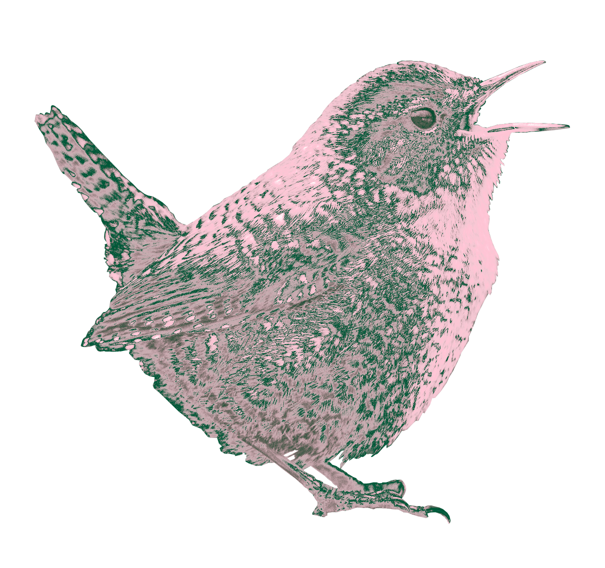
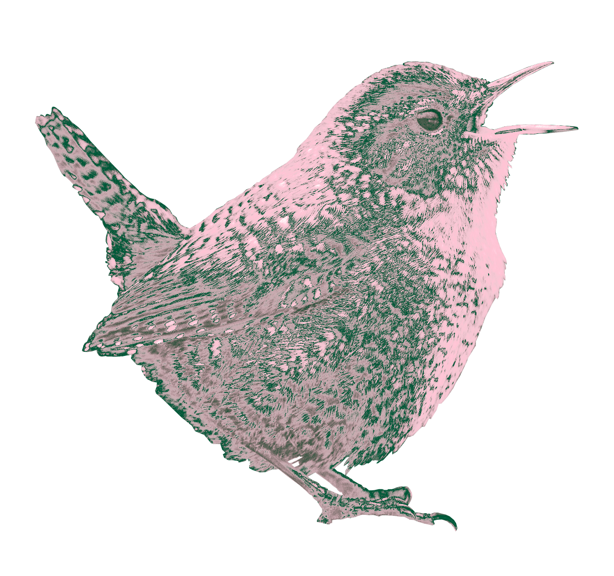

The Seekonk River, the upper estuary linking the Blackstone River and the Narragansett Bay, used to host many breeding and migratory birds. In 2019, there were over 150 species of birds sighted and recorded. Following the Great Extinction of 2038, the number of bird species found at Swan Point National Park significantly decreased. The above 35 bird species can still occasionally be spotted at the park.


 
